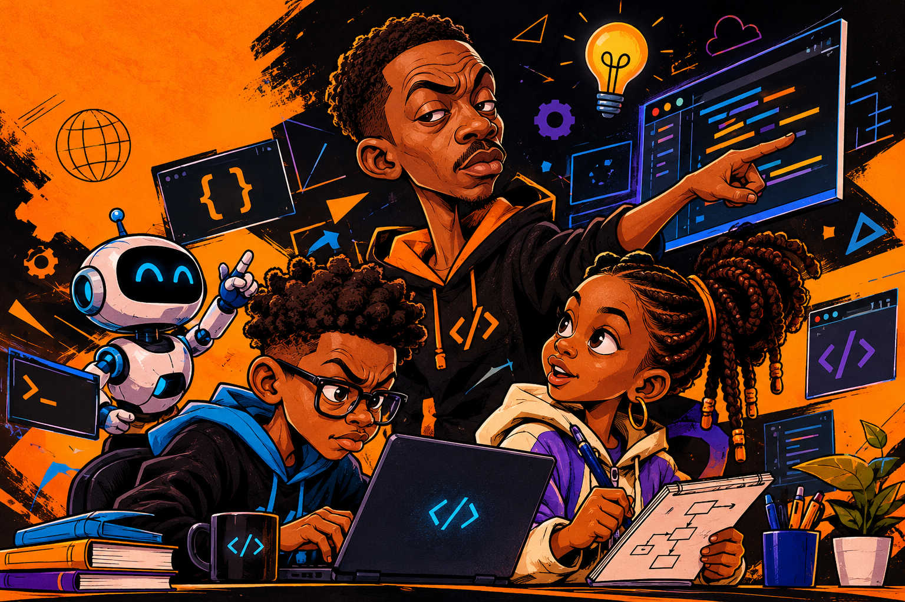

Direction visuelle
Identité graphique, UI/UX et expériences web expressives.
PORTFOLIO PERSONNEL · DAKAR, SÉNÉGAL
CARICATURE NUMÉRIQUE × TECHNOLOGIE CRÉATIVE
ART NUMÉRIQUE × CODE CRÉATIF × CYBERSÉCURITÉ
› Développeur Web & Mobile · Cybersécurité & réseaux · Créateur de projets digitaux · Direction artistique digitale
Développeur Web & Mobile créatif, passionné par la cybersécurité, les réseaux et le design digital. Je transforme les idées en expériences numériques expressives, à la croisée de l’illustration, de la technologie et de l’ingénierie.

01 / QUI SUIS-JE ?
Un profil à la rencontre du développement, de la sécurité informatique et de la création visuelle.
Je conçois des expériences digitales utiles, expressives et sécurisées — du premier croquis jusqu’à l’application fonctionnelle.
Mon approche allie précision technique et créativité visuelle. J’explore les interfaces, je construis des applications web et mobiles, j’expérimente les concepts de cybersécurité et je donne à chaque projet une identité distincte.
Mon univers visuel s’inspire de la caricature numérique semi-réaliste : expressions marquées, textures illustrées, forts contrastes et narration graphique.
Identité graphique, UI/UX et expériences web expressives.
Applications responsives, interfaces interactives et API.
Authentification, cryptographie, HTTPS/TLS et réseaux.
02 / SAVOIR-FAIRE
Un éventail de compétences pour concevoir, construire, connecter et sécuriser des produits digitaux.
Interfaces modernes, responsive et applications full-stack.
Conception d’expériences mobiles multiplateformes.
Stockage, versioning, conteneurisation et collaboration.
Architecture d’interface, prototypage et cohérence visuelle.
Principes de sécurité applicative et mécanismes cryptographiques.
Simulation et configuration de réseaux, protocoles web.
03 / SÉLECTION
Réalisations concrètes et explorations personnelles. Chaque statut reflète honnêtement l’état actuel du projet.
Application web conçue pour gérer les clients, créer des devis et les convertir en factures, suivre la TVA et les paiements, envoyer des relances et générer des documents PDF imprimables. Le projet prévoit des comptes multi-utilisateurs, l’authentification par code et WebAuthn ainsi que des sauvegardes automatiques.
Plateforme interactive d’apprentissage de la cybersécurité organisée en huit modules en français : triade CIA, authentification, hachage, chiffrement symétrique et asymétrique, HTTPS/TLS. Elle comprend des démonstrations pratiques de cryptographie via la Web Crypto API et des supports de cours PDF.
Conception de portfolios et de plateformes web professionnelles, dont un portfolio cinématographique avec fenêtres de projets interactives. Travail sur la direction artistique, les interfaces, les interactions et le déploiement, avec une attention particulière à la narration visuelle et à l’expérience utilisateur.
Développement de serveurs web Node.js/Express, mise en place d’API HTTP et de routage, intégration de bases de données et conception d’applications web et mobiles interactives.
04 / EXPÉRIENCE
Expérience en développement et parcours d’apprentissage.
Je mène des projets numériques de façon autonome, de la conception à la réalisation. Mon parcours combine apprentissage technique, expérimentation et création de solutions utiles.
Conception d’une application de gestion : clients, devis, factures, TVA, paiements, relances, documents PDF, rôles multi-utilisateurs, authentification et sauvegardes.
Création d’une plateforme de formation à la cybersécurité en huit modules, avec démonstrations Web Crypto API et cours PDF.
Développement d’applications web et mobiles, interfaces responsive, serveurs Node.js/Express, API HTTP et conception UI/UX.
Réalisation de portfolios et plateformes professionnelles, gestion autonome des étapes de conception, développement et déploiement.
05 / FORMATION
MIT Université de Dakar
Gomycode Dakar
Force N
Institution Marc Perrot
06 / CONTACT
Pour une collaboration, une opportunité ou un projet digital, contactez-moi. Parlons de votre idée.
mbowtidiane013@gmail.com ↗+221 78 922 98 73 · APPEL DIRECT ↗